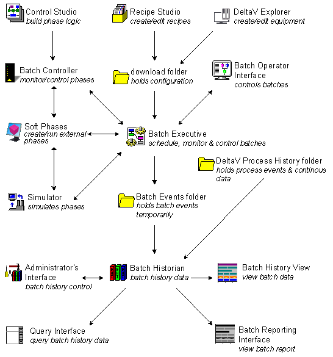

Batch in the DeltaV system
The DeltaV Batch subsystem provides many advantages over traditional batch processing. These advantages include:
Single point of data entry with sharing of the data between applications.
Modular structure. You use only what is appropriate for your batch process.
Client/Server architecture that allows you to run the application where appropriate.
Open system that lets you add components to the solution where required.
Extensible system. Increase or decrease the capability and/or size of any component.
Aliasing, which allows you to create class-based structure for your batch process.
The following picture represents an overview of how the entire DeltaV Batch subsystem works.
The DeltaV Batch Subsystem Data Flow
